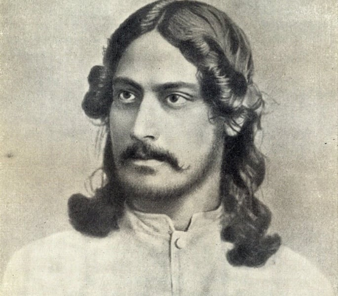

You cannot cross the sea merely by standing and staring at water.

Biography
Rabindranath Tagore (Bengali: রবীন্দ্রনাথ ঠাকুর), who is popularly called "Kabiguru", was born on 7 May 1861. His name is written as Rabindranath Tagore in many languages of India. He was a poet, philosopher, and artist. He wrote many stories, novels, poems, and dramas. He is also very well known for composing music. He wrote national anthem of two countries India and Bangladesh. His writings greatly influenced Bengali culture during the late 19th century and early 20th century. In 1913, he became the first Asian to win the Nobel Prize in Literature.His major works include Gitanjali (Song Offerings), a world-famous poetry book; Gora (Fair-Faced); Ghare-Baire (The Home and the World); and many other works of literature and art. Tagore was also a cultural reformer and modernized Bengali art. He made it possible to make art using different forms and styles.Tagore died on August 7, 1941 ("Baishey Shrabon" in Bengali, 22nd Shrabon).Tagore was born on 7th May in 1861,at Jorasanko in Calcutta. He was the youngest son of his parents. His father was Debendranath Tagore. His mother was Sharada Devi.
Rabindra nath Tagore was admitted in a school. But he did not like the still education. So he was educated at home He wrote his first poem when he was eight years old. In 1877, at the age of 16, Tagore published his first large poetry collection and wrote his first short story and dramas.In February 1873, at age 11, Tagore went on a tour of India with his father. They visited many places like Amritsar in Punjab, and Dalhousie in the Himalayas. Tagore also visited his father's estate at Shantiniketan. There he read biographies and studied history, astronomy, modern science, and Sanskrit. He also read works of Kalidas.During this time, Tagore also composed many literary works. Tagore wrote a poem in the style of Vidyapati, a famous poet who wrote in Maithili.In 1878, Tagore went to London. Because he wanted to become a barrister. Later he studied at University College London. But in 1880, after Tagore did not do well in school, his father called him back from London. His father arranged a marriage for him with Mrinalini Devi, a girl of ten years. Child marriage was common during that time. They got married on December 9, 1883. Together they had five children.